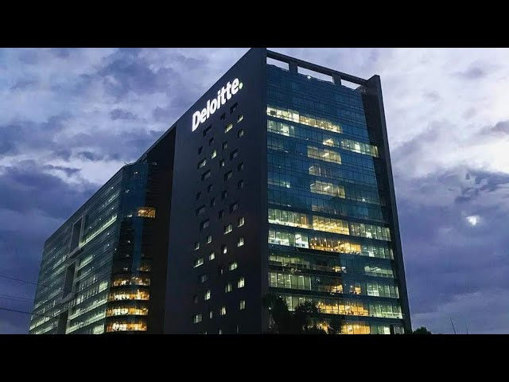
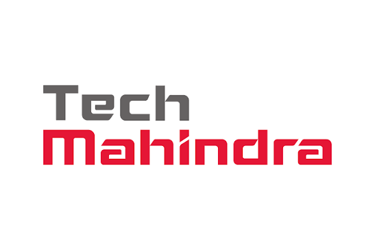

About Hyderabad
Hyderabad is one of India's fastest-growing technology cities. The city is home to HITEC City, where many multinational companies have established their offices. Hyderabad offers world-class infrastructure, skilled engineers, and a thriving IT ecosystem.
Hyderabad is globally recognized as "HITEC City" or "Cyberabad," standing as one of India's premier information technology, engineering, and business conversion hubs. ," standing as one of India's premier information technology, engineering, and business conversion hubs. The city boasts world-class infrastructure, expansive Special Economic Zones (SEZs), and a highly skilled workforce that drives advanced research in cloud computing, data science, and Enterprise Resource Planning (ERP). It acts as a massive corporate base for several Fortune 500 multinationals and premier Indian IT service companies.
Companies in Chennai
- Microsoft
- Deloitte
- Tech Mahindra
1. Microsoft 

About
Microsoft India Development Center (IDC) in Hyderabad is Microsoft’s largest research and development center outside of its Redmond headquarters. Launched in 1998, this sprawling 54-acre campus has evolved into a cornerstone of global product engineering.
The Hyderabad facility plays a foundational role in building and scaling mission-critical technologies Engineers and researchers here drive core developments for Microsoft Azure, Windows engineering, Xbox gaming services, and enterprise productivity software The Hyderabad facility plays a foundational role in building and scaling mission-critical technologies. Engineers and researchers here drive core developments for Microsoft Azure, Windows engineering, Xbox gaming services, and enterprise productivity software. It also houses a division of Microsoft Research India, focusing on artificial intelligence and socio-economic technology breakthroughs.
Microsoft's Hyderabad campus is one of its largest development centers. It contributes to cloud computing, artificial intelligence, cybersecurity, and software engineering.
Location & Contact Details
Microsoft India Development Center (Gachibowli Campus)
-
Address: Microsoft Campus, Nehru Outer Ring Road, Gachibowli, Hyderabad, Telangana – 500032.
-
Phone Number: +91 40 6695 0000
2. Google

About
Google's Hyderabad operations constitute one of its oldest and most vital operational footprints in Asia. The city serves as a massive technical hub handling complex product engineering, global user support, data operations, and digital advertising infrastructure.
Google is currently constructing a massive 3.3 million square foot standalone campus at Gachibowli, which will stand as its largest company-owned building outside of its Mountain View headquarters. at Gachibowli, which will stand as its largest company-owned building outside of its Mountain View headquarters. The Hyderabad division focuses heavily on scaling Google Cloud infrastructure, optimizing core Search features, and engineering YouTube trust and safety systems.
Google's Hyderabad office focuses on engineering, cloud services, customer support, and product development for users worldwide.
Location & Contact Details
Google Kondapur Campus
-
Address: Survey No. 13, DivyaSree Omega, Gachibowli-Miyapur Road, Kondapur, Hyderabad, Telangana – 500084.
-
Phone Number: +91 40 6619 0000
Google Gachibowli (Upcoming Mega Campus Site)
-
Address: Plot No. 1, Survey No. 41, Hitec City Phase II, Gachibowli, Hyderabad, Telangana – 500032.
3. Deloitte 

About
Deloitte maintains an enormous professional services presence in Hyderabad, operating its global delivery arm through the Deloitte US-India (USI) offices The Hyderabad hub is a critical node for delivering high-end technical consulting and corporate risk advisory to clients globally.
The Hyderabad teams specialize in deploying cutting-edge enterprise technologies, including large-scale SAP/Oracle implementations, cybersecurity operations, cloud transformation architecture, and advanced data analytics. The company operates out of several state-of-the-art tech parks across the city's financial districts.
Deloitte provides consulting, audit, tax, risk management, and technology services. Its Hyderabad office supports digital transformation and enterprise technology projects.
Location & Contact Details
Deloitte Block C (Hitec City)
-
Address: Deloitte Drive, Block C, Business Eye, Survey No. 31, Hitec City, Hyderabad, Telangana – 500081.
-
Phone Number: +91 44 6744 7070
Deloitte Gowra Palladium
-
Address: Gowra Palladium, Survey No. 11, Kondapur Main Road, Hitec City, Hyderabad, Telangana – 500081.
4. Tech Mahindra


About
Tech Mahindra is one of India's premier IT services and digital transformation pioneers, boasting a vast operational infrastructure across Hyderabad. The city serves as one of its primary global delivery capitals, hosting multiple massive innovation hubs and campuses.
Tech Mahindra is a leading IT services company offering software development, cloud computing, network solutions, cybersecurity, and digital transformation services to clients worldwide.
The Hyderabad branches focus heavily on software engineering for telecommunications, automotive engineering, manufacturing systems, and next-generation AI platforms The company’s sprawling campuses feature dedicated labs for connected vehicles, IoT architecture, and enterprise cloud migrations, serving hundreds of global corporate clients.
Location & Contact Details
Tech Mahindra Innovation Hub (Hi-Tech City Campus)
-
Address: Plot No. 23 to 34, Hi-Tech City Layout, Madhapur, Hyderabad, Telangana – 500081.
-
Phone Number: +91 40 4030 1414
Tech Mahindra Bahadurpally Campus
-
Address: Tech Mahindra Technology Centre, Bahadurpally Village, Qutbullapur Mandal, Hyderabad, Telangana – 500043.